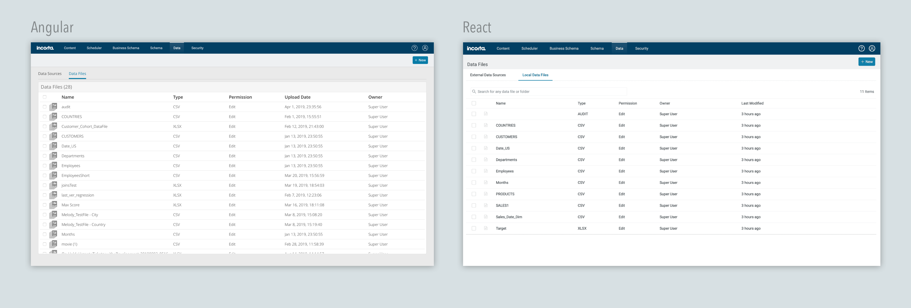
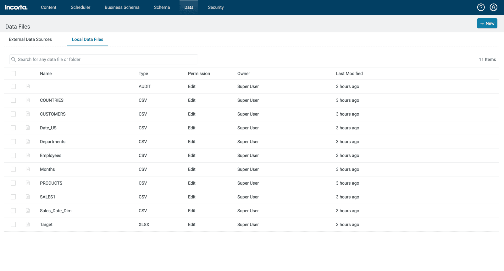
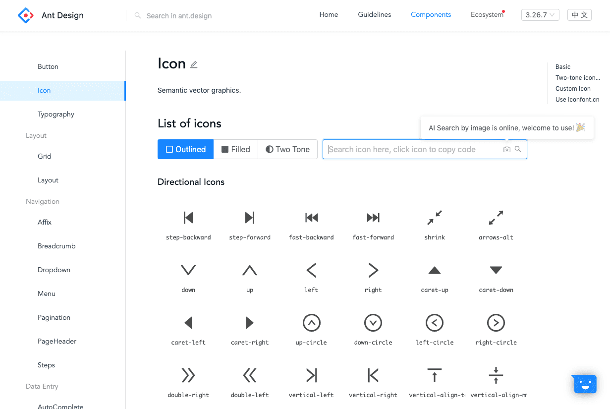
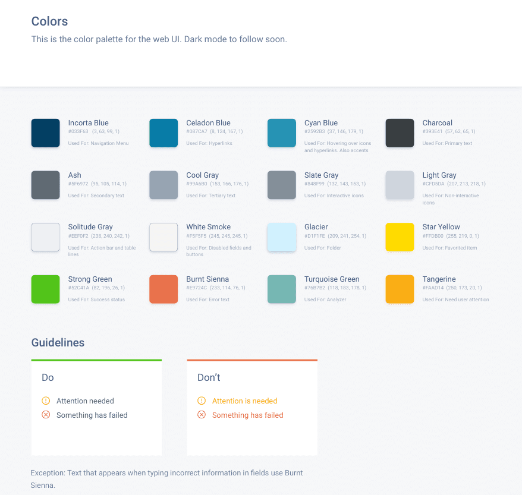
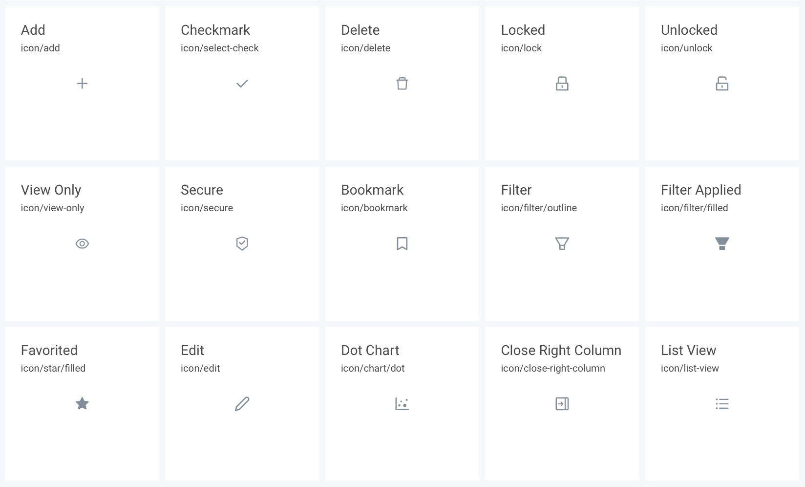
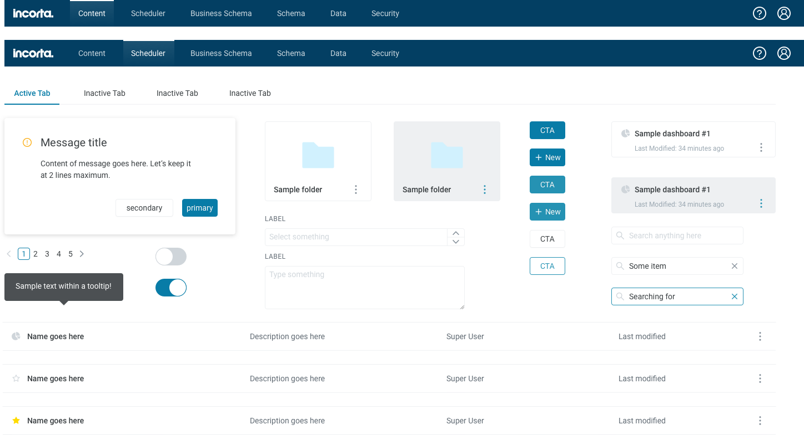
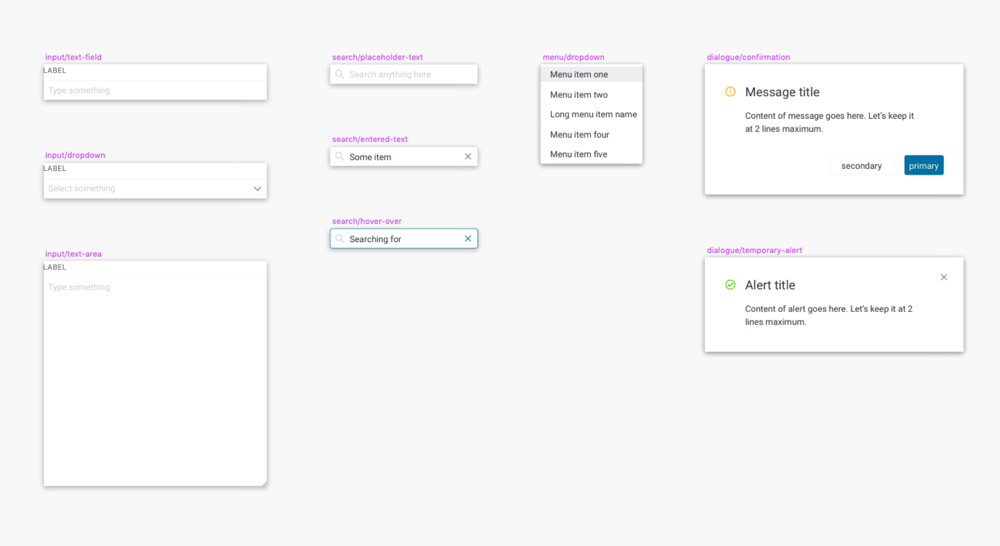
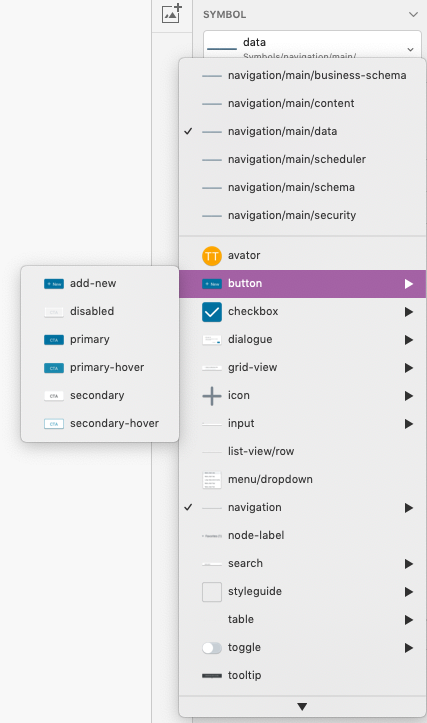
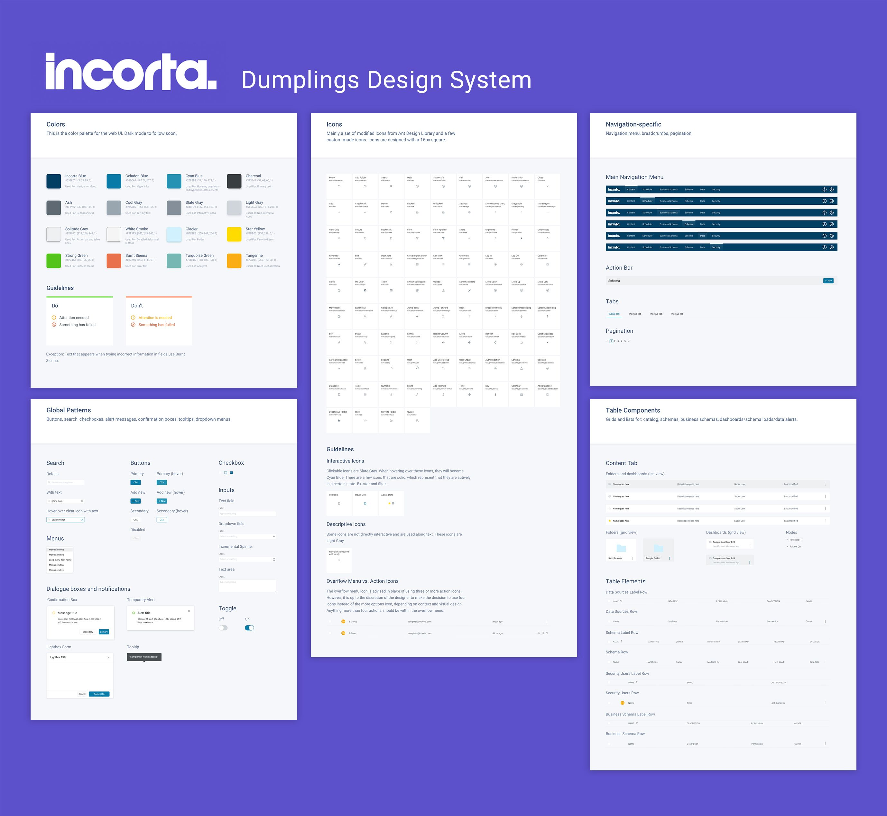

Incorta: Design Library
The single source of truth for design at Incorta
Trang Tran

About Incorta
Incorta is a hyper-converged data analytics app that removes the ETL process in data warehousing and lets users make use of their data fast. Our app allows users to bring in data to create connections between tables, and ultimately, create data visualizations so that businesses can make key decisions.
The problem
The design lead realized that with our team scaling, we had an issue right in front of our faces: we didn't a place for our design guidelines. Icons, fonts, and colors were scattered between dozens of Sketch files and Zeplin screens. It was difficult to be consistent with our designs, especially between the Egypt design team and the front-end engineers. I was tasked with creating a unified Sketch library to solve these issues.
Besides optimizing the workflow amongst designers and engineers, the design lead argued that having an Incorta design language would help us look more like a mature start-up. One of our design core values of consistency implies that using a uniform style of components in our app would help users understand the Incorta language. They would be able to recognize patterns on different parts of the app through repetition, and remember the concepts and interactions associated with them.
Because we didn't have a dedicated visual designer on the team, I was the owner and sole contributor to the library and synced up with the design lead regularly to review and commit on design decisions. I worked alongside engineers and other designers to locate certain assets.
Migrating from Angular to React
As an early start-up, we didn't feel the need nor have the bandwidth to create icons and common components from scratch. While we were creating new features for the core product, the front-end engineers were also porting the entire app into the React framework in parallel.
An example of one of our pages in Angular
The aforementioned page after it was ported over to React
We had to keep in mind that the styles used for the Angular pages were going away, and that these new components would have to replace some of our old components in the React pages.
Modifying the Ant Library for our needs
We were using the Ant Design Library, a common React UI library. We used the Sketch plug-in to pull icons directly into our designs. However, we weren't really documenting what icons were being used. It was a pain point addressed by engineers to have to go find the components and styles on the Ant Design website. It was also especially difficult for them because we were altering some of these components to fit within our app without their knowing. Overall, it led to unnecessary hurdles.
Engineers visited the Ant Library frequently and tried their best to match the styles we used in our design files
Auditing the Incorta desktop app
My first task was to go through the desktop app to find the inconsistencies in our UI. This meant documenting things like the different icons being used for similar actions, inconsistent colors, misalignment of pixels, incorrect border widths, wrong font sizes, etc. I shared my findings with my lead and we wrote up the requirements in phases, focusing on the granular bits first (color, icon, type) before pursuing the components (buttons and patterns). The deliverable would be a master Sketch library that would be shared amongst designers.
Why so many grays?
Focusing on the colors, I went through the Zeplin styleguide as well as the Incorta app to record all the hex values being used. One of our amusing discoveries was that we were using over 15 shades of grays, both cool and warm, without any intention. We accumulated so many variations of one color because some high fidelity mock-ups used incorrect hex codes and ended up going through development without being questioned.
After collecting the colors, I met with the design lead to go over which colors we should omit. We investigated where certain colors were being used and worked up some guidelines on how to use them. Between similar colors, we tested which colors had better web contrast ratios. I created a new Sketch file to house the final palette.
The current Incorta color palette after consolidating the app and Zeplin screens
Don't we already have an icon for that?
While we had no written rules on what type of icons we should be using exactly, there was some consistency in the styles that appeared in our app as we leaned towards simple icons with specific border widths. However, there were several icons being used for the same action. For example, we had three different search icons and several checkmark icons being used for one status. I came up with some proposals on which icons to replace and we synced up with figure out how to visually imply their interaction states.
In some instances, we didn't have Ant icons to represent some Incorta concepts. As a result, I had to find existing icons and redesign them in Illustrator to accommodate our use. I also altered several icons to make them appear as if they came from a family of icons.
Some of the icons were borrowed from Ant Design while some were original
Unifying all the text styles
Next, all the fonts were extracted from the app and Zeplin projects. As we were creating new features, new styles were needed to support heavy displays of data. I confirmed with the lead to see where our fonts were being used and how, and added it to the Sketch library. I had written out guidelines where to use certain styles.

The cleaned up font styles as they appeared in the design file
Building out the components
The last phase of the design library were the components. I collected the UI patterns on our app which were modified Ant Design components and created Sketch symbols using our updated colors, fonts, and icons. They were categorized by their usage, whether they were navigation-specific symbols, table components, or used globally.
The Sketch file was made into a Sketch Library and shared amongst the other designers to use for building prototypes quickly
Front-end Engineering Team
The Incorta Sketch Library (which I nicknamed Dumplings) was shared with team members via Zeplin. The engineers slowly began cleaning up their CSS styles to make sure the classes were named appropriately. We received feedback from the front-end team that it was nice to have all of our assets in one place, and if the engineers had any questions on what icons to use, they'd have a place to refer back to. The icons were all made to be exportable in the Zeplin screens as well.
Design Team
While the design system was useful to engineers, it would be put to use mainly by the designers. The Sketch library I created was a good starting point for better collaboration between designers, because my lead and I were heavily using it to create both lo-fi and high-fi mock-ups quickly.
No more storing icons separately
Designers can easily find symbols through this method
I designed the symbols in a way where they can be easily customized and have certain values overridden. The components are entirely flexible and the master file was being maintained and updated every day and shared through our Google Drive. Although it wasn't considered a completed library, it was helpful to many people.
Where the Incorta Design Library stands today
The design system helped us in having a single source of truth when it came to controlling consistency within the Incorta product. It was important when multiple designers were working on the core app and had to use global patterns. We were no longer opening separate Sketch files to find out how something was designed, where to find an icon, or what color to use. Having the design system readily available as a Sketch library helped us work efficiently as we were able to pull the assets directly into our prototypes. Even though I was working on features, I was still updating the library whenever we ended up creating new patterns.
Voila! The updated Incorta Design Library.
The takeaway: thoughts and lessons
Creating this system took about a month. Before diving in, I spent time researching dozens of design systems and reading into best practices on how to deliver one. The oppportunity to come up with a design system for Incorta was an important milestone for the design team, as we were now ramping up our processes and scaling the team.
Unfortunately, I didn't get to revisit the design system as much as I would have liked because there were some internal concerns with the design team and the allocation of our efforts. The design lead advocated for having a mature design system, but we had to be scrappy at a start-up, meaning we had to focus on customer-facing features first. To me, a company that spent time and resources into a library tells me that the company cares about design. Things that I would have liked to do would include expanding the design system further to consolidate the Dark Mode UI that I created earlier as well as work with a technical writer to incorporate a unified tone and voice in our app.